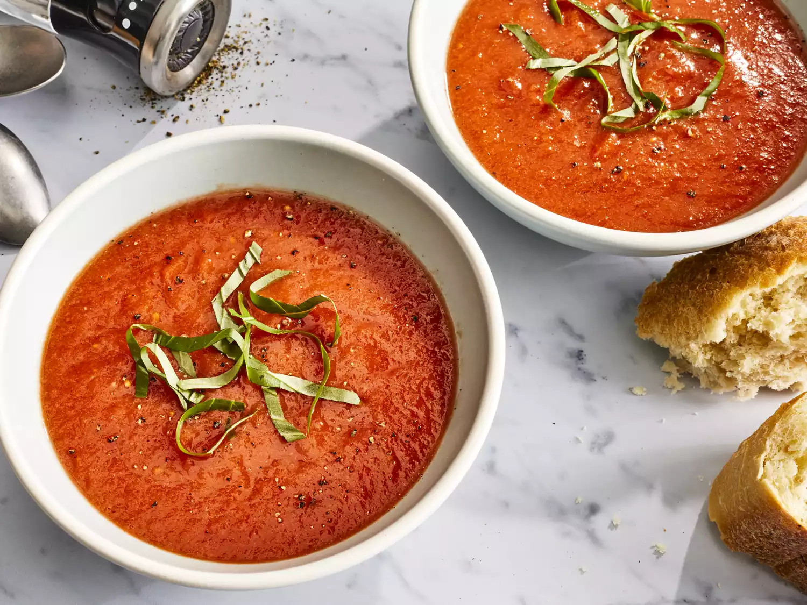

Home
Fresh Tomato Soup

Tomato Soup
This tomato soup recipe makes a rich, smooth, comforting soup that’s quick to make when you have ripe summer
tomatoes. Delicious topped with fresh basil and a grilled cheese sandwich for the ultimate homemade comfort food.”
—Charlotte
This tomato soup recipe uses fresh tomatoes and will remind you of your mom's famous cooking. Sure the can of
tomato soup works in a time crunch, but nothing beats the delicious flavors of a soup you made from scratch with
fresh ingredients. So say goodbye to canned soup forever and hello to your new favorite tomato soup recipe.
ingredients
- Tomatoes: This recipes starts with fresh tomatoes for good reason. It makes the best tomato soup
- Chicken broth: Using broth will help make this more of a soup and less like a sauce
- Garlic: The recipe calls for about four cloves, but feel free to use however much your heart desires.
- Onion: A yellow or white onion would be ideal for this soup
- Butter: Use butter to make a roux, a thickening agent made from flour and fat.
- Flour: Use all-purpose flour to make your roux.
- Sugar and Salt: Add these two seasonings until the soup suites your tastebuds
directions
- Gather the ingredients.
- Combine tomatoes, chicken broth, garlic cloves, and a large slice of onion in a stockpot over medium heat. Bring
to a boil, and gently simmer for about 15 to 20 minutes to blend flavors
- Remove from heat and run the mixture through a food mill into a large bowl, or pan. Discard any stuff left over
in the food mill.
- Melt butter over medium heat in the now empty stockpot. Stir in flour to make a roux by cooking, whisking
constantly, until mixture turns medium brown
- Gradually whisk in a bit of the tomato mixture to prevent lumps from forming, then stir in the rest
- Season with sugar and salt to taste.
- Serve hot and enjoy!